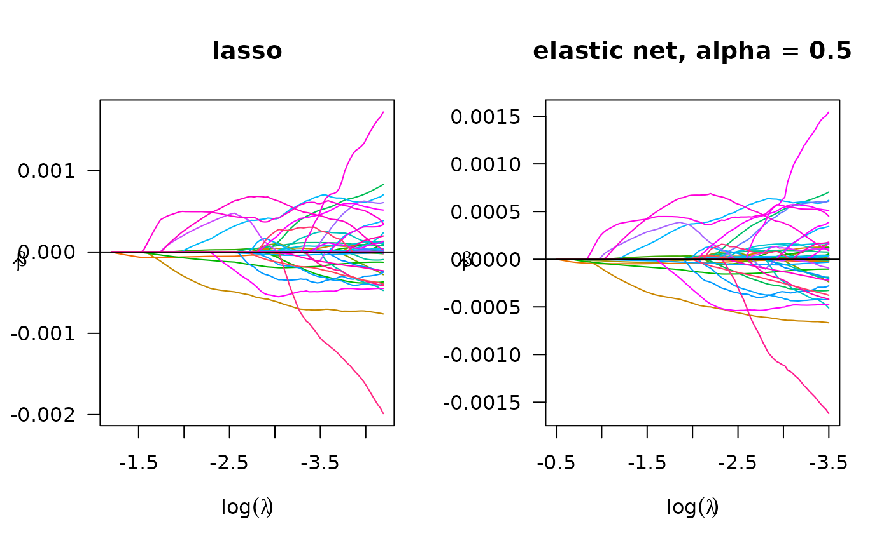
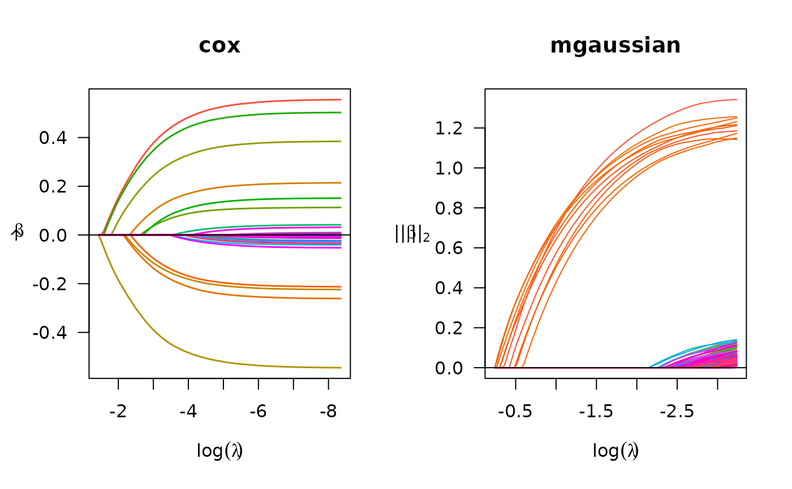

Extend lasso model fitting to big data that cannot be loaded into memory. Fit solution paths for linear, logistic or Cox regression models penalized by lasso, ridge, or elastic-net over a grid of values for the regularization parameter lambda.
biglasso( X, y, row.idx = 1:nrow(X), penalty = c("lasso", "ridge", "enet"), family = c("gaussian", "binomial", "cox", "mgaussian"), alg.logistic = c("Newton", "MM"), screen = c("Adaptive", "SSR", "Hybrid", "None"), safe.thresh = 0, update.thresh = 1, ncores = 1, alpha = 1, lambda.min = ifelse(nrow(X) > ncol(X), 0.001, 0.05), nlambda = 100, lambda.log.scale = TRUE, lambda, eps = 1e-07, max.iter = 1000, dfmax = ncol(X) + 1, penalty.factor = rep(1, ncol(X)), warn = TRUE, output.time = FALSE, return.time = TRUE, verbose = FALSE )
Arguments
| X | The design matrix, without an intercept. It must be a
double type |
|---|---|
| y | The response vector for |
| row.idx | The integer vector of row indices of |
| penalty | The penalty to be applied to the model. Either |
| family | Either |
| alg.logistic | The algorithm used in logistic regression. If "Newton" then the exact hessian is used (default); if "MM" then a majorization-minimization algorithm is used to set an upper-bound on the hessian matrix. This can be faster, particularly in data-larger-than-RAM case. |
| screen | The feature screening rule used at each |
| safe.thresh | the threshold value between 0 and 1 that controls when to stop safe test. For example, 0.01 means to stop safe test at next lambda iteration if the number of features rejected by safe test at current lambda iteration is not larger than 1% of the total number of features. So 1 means to always turn off safe test, whereas 0 (default) means to turn off safe test if the number of features rejected by safe test is 0 at current lambda. |
| update.thresh | the non negative threshold value that controls how often to update the reference of safe rules for "Adaptive" methods. Smaller value means updating more often. |
| ncores | The number of OpenMP threads used for parallel computing. |
| alpha | The elastic-net mixing parameter that controls the relative
contribution from the lasso (l1) and the ridge (l2) penalty. The penalty is
defined as $$ \alpha||\beta||_1 + (1-\alpha)/2||\beta||_2^2.$$
|
| lambda.min | The smallest value for lambda, as a fraction of lambda.max. Default is .001 if the number of observations is larger than the number of covariates and .05 otherwise. |
| nlambda | The number of lambda values. Default is 100. |
| lambda.log.scale | Whether compute the grid values of lambda on log scale (default) or linear scale. |
| lambda | A user-specified sequence of lambda values. By default, a
sequence of values of length |
| eps | Convergence threshold for inner coordinate descent. The
algorithm iterates until the maximum change in the objective after any
coefficient update is less than |
| max.iter | Maximum number of iterations. Default is 1000. |
| dfmax | Upper bound for the number of nonzero coefficients. Default is no upper bound. However, for large data sets, computational burden may be heavy for models with a large number of nonzero coefficients. |
| penalty.factor | A multiplicative factor for the penalty applied to
each coefficient. If supplied, |
| warn | Return warning messages for failures to converge and model saturation? Default is TRUE. |
| output.time | Whether to print out the start and end time of the model fitting. Default is FALSE. |
| return.time | Whether to return the computing time of the model fitting. Default is TRUE. |
| verbose | Whether to output the timing of each lambda iteration. Default is FALSE. |
Value
An object with S3 class "biglasso" for
"gaussian", "binomial", "cox" families, or an object with S3 class
"mbiglasso" for "mgaussian" family, with following variables.
The fitted matrix of coefficients, store in sparse matrix
representation. The number of rows is equal to the number of coefficients,
whereas the number of columns is equal to nlambda. For "mgaussian"
family with m responses, it is a list of m such matrices.
A vector of length nlambda containing the number of
iterations until convergence at each value of lambda.
The sequence of regularization parameter values in the path.
Same as above.
Same as above.
Same as above.
A vector containing either the residual sum of squares
(for "gaussian", "mgaussian") or negative log-likelihood
(for "binomial", "cox") of the fitted model at each value of lambda.
Same as above.
The number of observations used in the model fitting. It's equal to
length(row.idx).
The sample mean vector of the variables, i.e., column mean of
the sub-matrix of X used for model fitting.
The sample standard deviation of the variables, i.e., column
standard deviation of the sub-matrix of X used for model fitting.
The response vector used in the model fitting. Depending on
row.idx, it could be a subset of the raw input of the response vector y.
Same as above.
The indices of features that have 'scale' value greater than 1e-6. Features with 'scale' less than 1e-6 are removed from model fitting.
The number of features rejected at each value of lambda.
The number of features rejected by safe rules at each
value of lambda.
Details
The objective function for linear regression or multiple responses linear regression
(family = "gaussian" or family = "mgaussian") is
$$\frac{1}{2n}\textrm{RSS} + \lambda*\textrm{penalty},$$
where for family = "mgaussian"), a group-lasso type penalty is applied.
For logistic regression
(family = "binomial") it is $$-\frac{1}{n} loglike +
\lambda*\textrm{penalty},$$, for cox regression,
breslow approximation for ties is applied.
Several advanced feature screening rules are implemented. For
lasso-penalized linear regression, all the options of screen are
applicable. Our proposal adaptive rule - "Adaptive" - achieves highest speedup
so it's the recommended one, especially for ultrahigh-dimensional large-scale
data sets. For cox regression and/or the elastic net penalty, only
"SSR" is applicable for now. More efficient rules are under development.
See also
Author
Yaohui Zeng, Chuyi Wang and Patrick Breheny
Maintainer: Yaohui Zeng <yaohui.zeng@gmail.com> and Chuyi Wang <wwaa0208@gmail.com>
Examples
## Linear regression data(colon) X <- colon$X y <- colon$y X.bm <- as.big.matrix(X) # lasso, default par(mfrow=c(1,2)) fit.lasso <- biglasso(X.bm, y, family = 'gaussian') plot(fit.lasso, log.l = TRUE, main = 'lasso') # elastic net fit.enet <- biglasso(X.bm, y, penalty = 'enet', alpha = 0.5, family = 'gaussian') plot(fit.enet, log.l = TRUE, main = 'elastic net, alpha = 0.5')## Logistic regression data(colon) X <- colon$X y <- colon$y X.bm <- as.big.matrix(X) # lasso, default par(mfrow = c(1, 2)) fit.bin.lasso <- biglasso(X.bm, y, penalty = 'lasso', family = "binomial") plot(fit.bin.lasso, log.l = TRUE, main = 'lasso') # elastic net fit.bin.enet <- biglasso(X.bm, y, penalty = 'enet', alpha = 0.5, family = "binomial") plot(fit.bin.enet, log.l = TRUE, main = 'elastic net, alpha = 0.5')## Cox regression set.seed(10101) N <- 1000; p <- 30; nzc <- p/3 X <- matrix(rnorm(N * p), N, p) beta <- rnorm(nzc) fx <- X[, seq(nzc)] %*% beta/3 hx <- exp(fx) ty <- rexp(N, hx) tcens <- rbinom(n = N, prob = 0.3, size = 1) # censoring indicator y <- cbind(time = ty, status = 1 - tcens) # y <- Surv(ty, 1 - tcens) with library(survival) X.bm <- as.big.matrix(X) fit <- biglasso(X.bm, y, family = "cox") plot(fit, main = "cox") ## Multiple responses linear regression set.seed(10101) n=300; p=300; m=5; s=10; b=1 x = matrix(rnorm(n * p), n, p) beta = matrix(seq(from=-b,to=b,length.out=s*m),s,m) y = x[,1:s] %*% beta + matrix(rnorm(n*m,0,1),n,m) x.bm = as.big.matrix(x) fit = biglasso(x.bm, y, family = "mgaussian") plot(fit, main = "mgaussian")